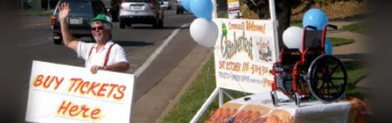
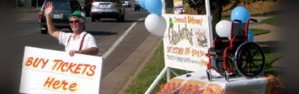
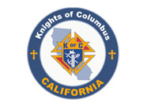

 

Charitable Activities
Below are some of the events, fundraisers, parish activities, and youth programs the Knights of Columbus Fr. Neil W. Seidl Council #13672 (Orangevale) have been involved with over the past year:
- Fireworks BoothsParish Improvements
- Treasurefest
- Corporate Communion and Memorial Mass
- Mather Air Show
- Christmas Social
- ID (Tootsie Roll) Drive
- Oktoberfest Dinner
- Soccer Challenge
- Free Throw Championship
- E-Waste Recycling and Document Shredding Day
- Pancake Breakfast
- Blood Drive
- Christmas Social
- Pro-Life
- Golf Tournament
- Veteran’s Celebration and Reception
- 40-Days for life prayer Vigil
 Supreme Council
Supreme Council  State Council

 Divine Savior Parish
Divine Savior Parish Upcoming Events  Charity through Golf Tournament
Charity through Golf Tournament
Charity through Golf Tournament
Featured Charities  Wheel Chair Mission
Wheel Chair Mission
 Camp Recreation
Camp Recreation